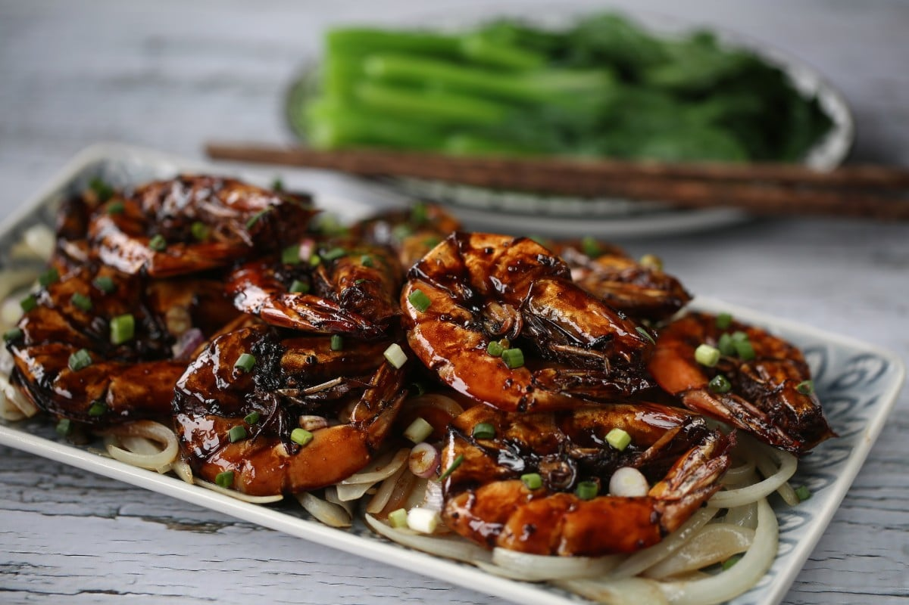

Honeydew Prawns

Easy Asian Stir Fry Prawns
Ingredients
- Prawns, 350g or 10 pieces
- Sweet Soy Sauce
- Garlic cloves, finely chopped
- Olive Oil
- Garlic Powder
- Basil
- Salt
- Honeydew, diced
- Bell Peppers, chopped
- Onions, sliced or chopped
- Thai Red Chili
Steps
- Lightly cook the chopped onions, garlic cloves and thai red chili in olive oil, remove from heat before garlic starts to brown.
- Add 2 tbs olive oil and fry the prawns, and begin adding the onion and garlic mixture
- Add 3-4 tbs sweet soy sauce
- Add the bell peppers and diced honeydew and sweat the dish
- There shouldn't be a need to add water as the juices from the honeydew should start to dilute the dish
- Off the heat, add some basil to garnish, serve.
Back to Main